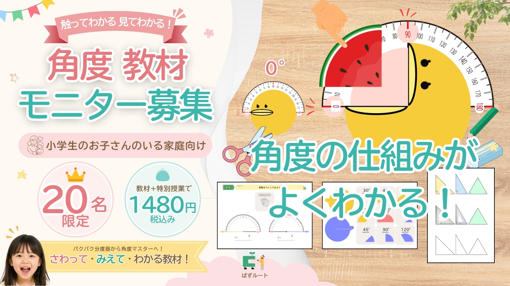

「なぜ割るの？」が
スッキリわかる。
「角度って何？」がわからない。それは「見えていない」から。
イメージを通して、角度の本当の意味をつかみます！
見える化角度教材 モニター 5月31日（日）11時～募集開始！
✅ PDF即時ダウンロード ✅ 何度でも印刷OK
✅ 授業動画つき ✅ お悩み相談つき
【Monthlyぱずルート専用公式ラインはここをタップ👆】
→最新情報をお届けします！
※ 定員に達し次第、募集を終了します
角度でつまずく子は
たくさんいる…
- 「角度の意味」を聞かれても、うまく説明できない
- 角度のたし算、ひき算のイメージがつかめていない
- 市販のドリルをやらせても「わからない」「もうイヤ」とすぐやめる
- 算数が苦手になってから、子どもの自信がなくなってきた気がする
それ「見えていない」からかも。
「見える化」すると、グッとわかりやすくなります！
なんで「見える化」で
わかるようになるの？
3つの設計上の工夫があります！
🔍 角度の「意味」をイメージで見える化
「90°＝直角」を、言葉ではなくイメージで直感的に理解できます。「角度＝広がり具合」をイメージでわかりやすく構造化しています。
🧩 操作・書く・解く、３層構造の設計
パクパク動かす「教具」、考えながら使う「ワークドリル」、繰り返し定着させる「ドリル」の3種類で、理解から定着まで一気通貫。多様な学びに対応できます。
✋ 「手を動かす」が理解を深める
切り取って操作する教具は、視覚だけでなく触覚・運動感覚も活用します。「動かしながら考える」体験が、角度の概念をより深く、より長く記憶に定着させます。
こんなお子さんに
特に効果的です
角度の意味が
わかっていない
「なんで？」と
よく聞いてくる子
手を動かすのが
好きな子
視覚的に見て
理解するタイプ
※ 本教材はご家庭向けライセンスです。塾・学校・療育施設での使用は法人ライセンスをご相談ください。
まだ誰も持っていない教材を、
いちばんに。
あなたの声がこの教材を育てます

「見える化角度教材」は、来年度の完全版リリースに向けて開発中のサービスです。
モニター版では、実際にお子さんと使っていただきながら、「使いやすかった点」「もっとこうだったら」などリアルな声を聞かせてください。
あなたの声を、多くの子どもたちの「わかった！」につなげます！
サービス①見える化角度教材
PDF教材（全86P）をダウンロード→印刷して、お子さんと一緒に使いましょう！
サービス②お子さん向け授業動画の視聴
教材の使い方、角度の導入授業をお子さん向けに実施！保護者の方も視聴して、角度マスターへ！
サービス③家庭学習のお悩み相談つき：学習支援のプロがお答えします
学習指導/支援15年以上のプロがご家庭でのお悩みにお答えします！プロの視点を明日から活用！
モニター特典：来年度リリース時に優先的にご案内
完全版リリース時には、永久割引クーポン付きで最優先にご案内いたします！（希望者のみ）
1,480円で受け取れるもの
PDF教材だけじゃありません。
PDF教材 全3種・８６ページ
角度教具7P・ワークドリル10P・ドリル69P。印刷して何度でも使えます。
Main contentお子さん向け：授業動画＜アーカイブ版＞
授業動画もあるから、学びの導入も楽々！教材の活用法もわかる！期間中何度でも見直せます。
Video for kids保護者向け：家庭のお悩み相談解答＜学習支援のプロがお答えします＞
学習指導/支援15年以上のプロがご家庭でのお悩みにお答えします！プロの視点を明日から活用！
Video for parents家庭でのお悩み、プロの視点でお答えします
療育と教育のカケハシ【お悩み相談】
※ 音量にご注意ください。
「できた！」に導く
３種類の教材
それぞれ役割が異なります！
✂️ 角度教具
切り取って台紙の上に置いたり、動かしたりして操作する教材です。手を動かしながら「角度の意味」を体で理解できます。視覚と触覚の両方を使うことで、概念がしっかり定着します。
📄 7ページ📋 角度ワークドリル
ドリルっぽい見た目でありながら、一部を切り取って操作できる工夫が入っています。「考えながら手を動かす」ことで、見える化と定着が同時に進みます。
📄 10ページ✏️ 角度ドリル
書き込むだけのシンプルなドリルです。視覚支援が豊富で、大ボリュームの69ページで、繰り返しによる定着をしっかりサポート。角度とは何か、イメージをもって制す！
📄 69ページ私たちが作りました！
療育と教育、それぞれのプロが力を合わせた教材
イギリス・ケント大学大学院修了後、国内で知的障害や発達障害の診断がある子どもたちの学習支援・行動支援を15年以上行っています。「どの子にも、わかる喜びを」という思いから、認知特性に合わせた教具開発を続けてきました。
- イギリス、ケント大学・大学院 修了
- 知的障害・発達障害児童の学習/行動支援15年以上
- ぱずルート代表・教具開発責任者
元予備校教室長・小学生～大学生までの教師/講師として多様な子どもたちの支援を実践。インターナショナルスクール時代には「授業のUD化」を実践。国際的な教師資格TESOLも保持し、「どんな子でも理解できる教材設計」を追求して授業づくりを行ってきました。
- 元大手予備校教室長・教員免許保有
- 国際資格 TESOL保有・元インター教師
- ぱずルート立ち上げ・教材制作責任者
📊 ぱずルートのこれまでの実績
2人の専門家が開発した教具・教材は、多くのご家庭に届いています。
見える化角度教材
モニター版
PDFダウンロード版・全86ページ / ご家庭向けライセンス
お子さん向け授業動画&お悩み相談つき
完全版リリース時は優先ご案内（希望者のみ）
※ モニター価格・募集人数は予告なく変更・終了することがあります
※ 各種データ教材は、予告なく製本版をリリースする場合もあります
モニターとして参加する →申し込み前の確認
ご不明な点はお問い合わせください！
リリースできることが決定しましたら公式販売サイトにてお知らせします。なお全てデータ教材が製本ドリル化されるわけではありませんのでご了承ください。
なおインターネット上を含め、私どもが公開/販売している教材の著作権はぱずルートにあります。本サイトに掲載している教材含め、ぱずルートが制作した教材を模倣した、あるいは参考にした教材の制作はおやめください。各種法令をお守りいただきますよう、お願いいたします。